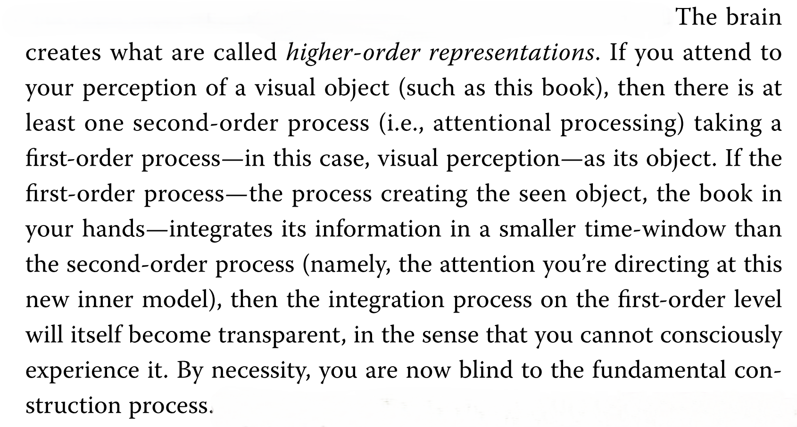
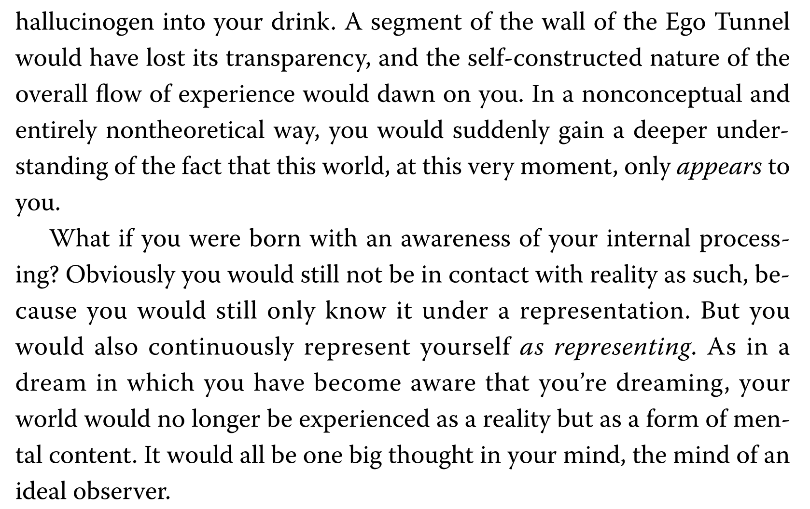

Bookshelf
Already read
- The Goal — Eliyahu M. Goldratt (1984)
- “how do I optimize each part?” → “what is preventing the whole system from producing more?”
- “Is this process efficient?” → “Does this process improve the throughput of the whole system?”
- Zero to One — Peter Thiel (2014)
- “What does existing demand tell me to build?” → “What do I believe will be true, and what should I build now because I believe it?”
- “What is everyone else doing?” → “What important truth do I see that others don't?”
- “How can I improve what already exists?” → “What valuable thing does not exist yet?”
- Job Market Signaling — Michael Spence (1973)
- A costly signal can convey real information about unobservable quality even when it adds no direct productive value, because it's cheaper to obtain for those who already have the underlying quality.
- Is this credential or behavior actual information, or cheap talk? Who would find it costlier to fake?
- The Use of Knowledge in Society — Friedrich Hayek (1945)
- “How can the economy determine the best use of its resources?” → “How can the economy coordinate decisions when the knowledge needed to determine their best use is dispersed?”
- “How can a central authority gather enough information to coordinate the economy?” → “How can people coordinate using only the knowledge available to them?”
- “How can the system communicate everything people need to know?” → “How can prices communicate only what each person needs to adapt?”
- “How can the economy make the right plan?” → “How can the economy continuously adapt without anyone having the whole plan?”
Currently reading
I'm interested in understanding the human as a system: how it represents reality, constructs a self, develops capability, adapts, and acts.
- The Ego Tunnel — Thomas Metzinger (2009)
- "Metz's phenomenal self-model: conscious model of the organism as a whole that is activated by the brain. The content of the PSM is the Ego." — YZ
- "We mentally represent ourselves as representational systems, in phenomenological real-time. This ability turned us into thinkers of thoughts and readers of minds, and it allowed biological evolution to explode into cultural evolution." — YZ
- "the deeper holistic sense of self...is a form of conscious representational content" — YZ
- "A conscious world-model active in the brain is transparent if the brain has no chance of discovering that it is a model" — YZ
- "The central claim of this book—and the theory behind it, the self-model theory of subjectivity—is that the conscious experience of being a self emerges because a large part of the PSM in your brain is transparent. The Ego, as noted, is simply the content of your PSM at this moment (your bodily sensations, your emotional state, your perceptions, memories, acts of will, thoughts)." — YZ
- "Whenever the organism needs this tool, the brain activates a PSM. If—as, for instance, in dreamless deep sleep—the tool is not needed anymore, it is turned off." — YZ
- "It must be emphasized that although our brains create the Ego Tunnel, no one lives in this tunnel. We live with it and through it, but there is no little man running things inside our head. The Ego and the Tunnel are evolved representational phenomena, a result of dynamical self-organization on many levels." — YZ
- "Ultimately, subjective experience is a biological data format, a highly specific mode of presenting information about the world by letting it appear as if it were an Ego's knowledge. But no such things as selves exist in the world. A biological organism, as such, is not a self. An Ego is not a self, either, but merely a form of representational content—namely, the content of a transparent self-model activated in the organism's brain." — YZ
- "This genuine conscious sense of selfhood is the deepest form of inwardness, much deeper than just being “in the brain” or “in a simulated world in the brain.”" — YZ
- "What sets human consciousness apart from other biologically evolved phenomena is that it makes a reality appear within itself. It creates inwardness; the life process has become aware of itself." — YZ
- "The most fascinating feature of the human mind, perhaps, is not simply that it can sometimes be conscious, or even that it allows for the emergence of a PSM. The truly remarkable fact is that we can also attend to the content of our PSM and form concepts about it. We can communicate about it with one another, and we can experience this as our own activity." — YZ
- "True, consciousness is a robust phenomenon; it doesn't change simply because of the opinions we have about it. But it does change through practice (think of wine connoisseurs, perfume designers, musical geniuses)" — YZ
- "individual thoughts can form more complex conscious experiences, which may be described as unfolding patterns of reasoning" — YZ
- "Attach metzinger.png" — YZ

- "It (the speed and reliability of the process of integration of models of things) makes your brain invisible to itself. You are in contact only with its content; you never see the representation as such; therefore, you have the illusion of being directly in contact with the world. And that is how you become a naïve realist, a person who thinks she is in touch with an observer-independent reality." — YZ
- "If a biological brain wants to develop a new cognitive capacity, it must pay a price (known as a metabolic price, among neuroscientists). The currency in which the price is paid is sugar. Additional energy must be made available and more glucose must be burned to develop and stabilize this new capacity." — YZ
- "My theory—the self-model theory of subjectivity—predicts that as soon as a conscious representation becomes opaque (that is, as soon as we experience it as a representation), we lose naive realism. [...]. In short, if the book in your hands lost its transparency, you would experience it as a state of your mind rather than as an element of the outside world. You would immediately doubt its independent existence. It would be more like a book-thought than a book-perception." — YZ
- "Attach metzinger2.png" — YZ

- "Now that I'm thinking about it, anything is just content except from like the experience stripped away from all the content. I mean the representational content reduces the experience. PSM is deep, deep representational content." — YZ
- "This book, a piece of knowledge but unlike other, made an impressionistic impact on me in the sense that it shifted my experiential state whenever I read it. So it still satisfied what a good piece of knowledge would do, in that constructing understanding helps construct useful representations for the future except that this construction process was involved with phenomenal representations so the effect of understanding was direct; directly affecting experience and not some epistemic representation. Additionally, the language in which I'm describing it here is also directly influenced by it." — YZ
- "Now, “imagination” in of itself became a topic of interest for me. I'm starting to dabble in weird art like scale disruption. I'm looking for ways to not use language. I'm looking for ways to deal with the mystical and mystifying nature of experience and its content." — YZ
- "Gabe says the mind “locks itself into” representations and that spirituality is partly about getting closer to reality by making the stories we tell ourselves progressively less false. He talks about “higher resolution maps,” “carving reality close to the joints,” and becoming able to bear a truer story." — YZ
- "Gabe says: “spiritual practice is the art of using your imagination to get as close to reality as possible”" — YZ
- "Gabe says: “The void is all your senses all at once without you representing it”" — YZ
- "One of the strongest ideas in the interview is that representations can serve as defenses. Gabe describes stories as things we use to avoid contact with something psychologically difficult, and the process of becoming more honest as gradually removing those distortions." — YZ
- "Gabe describes fear as producing freezing/avoidance, anger as mobilized fear, and courage as moving despite fear rather than eliminating it." — YZ
- "“do nothing, seek wisdom” Gabe explains that “do nothing” isn't the objective. It's creating a gap between stimulus and response so that you don't immediately act from an already-assumed interpretation. “What becomes visible when you stop immediately converting perception into action?” a form of epistemic slack" — YZ
- "How do you condition someone without imprisoning them in the conditioning? Gabe says that you cannot avoid conditioning; therefore try to build a person who can eventually examine their own conditioning." — YZ
To read, given my curiosity
- Thinking in Systems — Donella Meadows (2008)
- The Embodied Mind — Francisco Varela, Evan Thompson, Eleanor Rosch (1991)
- An Introduction to Cybernetics — W. Ross Ashby (1956)
- Steps to an Ecology of Mind — Gregory Bateson (1972)
- The Sciences of the Artificial — Herbert Simon (1969)
- Seeing That Frees — Rob Burbea (2014)
- "The Not-self Strategy" — Thanissaro Bhikkhu (1993)
- The Happiness Trap — Russ Harris (2007)
- The Origin of Wealth — Eric Beinhocker (2006)
On hold
- Metaphors We Live By — George Lakoff & Mark Johnson (1980) — 4 of 30 chapters in
- Price Theory: An Intermediate Text — David D. Friedman (1986) — 2 chapters in
To read, in my library
- The Fifth Discipline — Peter Senge (1990)
- Zen and the Art of Motorcycle Maintenance — Robert M. Pirsig (1974)
- Philosophy as a Way of Life — Pierre Hadot (1995) — ancient philosophy as repeated exercises to restore a way of seeing: attention, meditation on death, memorized principles, looking at life from above, examining oneself, returning to the present. [#4: larger model for why traditions develop exercises — insight decays. May reorganize the area.]
Why the sacred fades, and how seeing makes worlds — by ChatGPT
From a conversation about (1) why intense states — e.g. a sense of the sacred after a jhāna-like experience — naturally fade, and (2) what fundamental questions we might be missing about attention and reality.
- Seeing That Frees — Rob Burbea (2014) — much deeper on why a way of looking constructs a world. [#1: deepest model — way of looking → fabricated experience. Connects sacredness, self, attention, emptiness, states, inquiry. Don't rush; practice from it.]
- After the Ecstasy, the Laundry — Jack Kornfield (2000) — almost exactly the first question: what happens after profound openings and how they get integrated into ordinary life. [#11: you've begun to see the answer; books above move you further right now.]
- Right Concentration — Leigh Brasington (2015) — specifically for relating correctly to jhāna experiences. [#17: useful for jhāna, but your question has widened beyond jhāna.]
- “The Power of Perception” + talks on mindfulness of death — Thanissaro Bhikkhu — on sustaining perception after meditation and reordering priorities through recollection of death. [#18: consume selected talks rather than a major reading project.]
Stay Sharp
Books to keep re-reading to stay sharp.
- The Art and Craft of Problem Solving — Paul Zeitz (1999)
- Thinking and Deciding — Jonathan Baron (1988)
On presence — by Vivid Void
- The Mystic's Almanac — Vivid Void — daily liturgy combining meditation with ritual, aesthetics, prayer, music, nature and daily rhythms. [#2: your problem is no longer intellectual — how to make remembering part of life. Closest to a concrete architecture for that.]
- The Practice of the Presence of God — Brother Lawrence (1692) [#3: very short, high expected value. Pure version of ordinary activity → cue to remember. Read almost immediately.]
- Drawing on the Right Side of the Brain — Betty Edwards (1979) — by Vivid Void
The divine
Ways of seeing that disclose sacredness — not proving “God exists,” but discovering that perception itself can acquire depth, divinity, mystery, beauty, meaningfulness and participation. Instead of asking only “What is reality really like?”, investigate “What ways of looking make what kinds of worlds appear?”
- Seeing That Frees — Rob Burbea (2014) — start here, especially self, fabrication and ways of looking; don't jump straight into later imaginal material as a metaphysical system. [#1]
- A Year to Live — Stephen Levine (1997) — live for one year as though it were your final year: mortality meditation, life review, unfinished business, forgiveness, gratitude, letting go of control, fear of dying, the body, journaling. [#5: making mortality an investigation, not a concept. Death Note thread.]
- “From Mindfulness to Divinity” — Rob Burbea (talk) — closest to the divine/sacred question. [#8: potentially extremely relevant; prefer some foundation first.]
- On Having No Head — Douglas Harding (1961) + headless experiments — [#9: repeatable perceptual experiment instead of another assertion.]
- “The Experience of Self” — Rob Burbea (talk) [#12: strong, but overlapping with Seeing That Frees.]
- “Non-Duality and the Fading of Perception” — Rob Burbea (talk) [#13: same reason.]
- Gravity and Grace — Simone Weil (1947) — on removing the ego's appropriation of reality: attention, grace, affliction, decreation. Weil asks: what becomes perceptible when the self stops putting itself at the center? Pairs with Burbea, who asks: how is this experience being fabricated by a way of looking? [#14: potentially huge; read slowly. No clean method — powerful perceptions.]
- La mort d'Ivan Ilitch — Léon Tolstoï (1886) — relating to my interest in the divine. [#15: artistic event that might do what Death Note did, rather than explain mortality.]
- Phédon — Platon (4th century BCE) [#16: how a person should relate to death; less immediately useful for practice construction.]